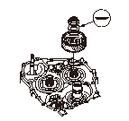

L.サイド カバーの組立
専用工具
スプライン シャフト ホルダ セット 07PAB-0010000
ギヤ インストーラ セット 070AC-XFD0100
トルク コンバータ ケースの裏側で、メインシャフトに専用工具を取付ける。
メインシャフトのネジ部、スプライン、メインシャフト アイドル ギヤのスプライン、分解時取外したスプリング ワッシャとロックナットにATFを塗布する。
メインシャフト（A）にアイドル ギヤ（B）、分解時取外したスプリング ワッシャ（C）、ロックナット（D）を取付けて、ロックナットをトルク216N·m（22.0kgf·m）で締付けてアイドル ギヤをメインシャフトに取付ける。
•
メインシャフト アイドル ギヤをハンマなどでたたいて圧入しないこと。
•
ロックナットの締付けには必ずトルク レンチを使用し、インパクト レンチは絶対に使用しないこと。
次の部品にATFを塗布する。
•
セカンダリ シャフトのネジ部およびスプライン
•
アイドル ギヤ シャフト
•
セカンダリ シャフト アイドル ギヤのスプライン
•
分解時取外したスプリング ワッシャおよびロックナット

セカンダリ シャフト（A）にセカンダリ シャフト アイドル ギヤ（B）を取付け、アイドル ギヤ シャフト（C）にアイドル ギヤ シャフト アイドル ギヤ（D）を取付ける。
アイドル ギヤ シャフトに専用工具を取付ける。専用工具のインストーラ ナットを締付けてアイドル ギヤをメインシャフトとセカンダリ シャフトのアイドル ギヤに噛み合わせ、アイドル ギヤがセカンダリ シャフト アイドル ギヤに干渉しない位置まで圧入する。
インストーラ ナットは左ネジ。
セカンダリ シャフト（A）に分解時取外したスプリング ワッシャ（B）、ロックナット（C）を取付けて、ロックナットをトルク226N·m（23.0kgf·m）で締付けてアイドル ギヤを圧入する。
•
セカンダリ シャフト アイドル ギヤをハンマなどでたたいて圧入しないこと。
•
ロックナットの締付けには必ずトルク レンチを使用し、インパクト レンチは絶対に使用しないこと。
•
セカンダリ シャフト ロックナットは左ネジ。
再度、専用工具のインストーラ ナットを締付け、アイドル ギヤをアイドル ギヤ シャフトに圧入して取付ける。確実に圧入した後、専用工具を取外す。
アイドル ギヤ シャフト（A）に新品のスナップ リング（B）を取付けてアイドル ギヤを固定する。スナップ リングが確実にスナップ リング溝に入っていることを確認する。
コントロール シャフト（A）にパーキング ブレーキ レバー（B）とストッパ（C）を取付ける。ロック ワッシャ（D）は、パーキング ブレーキ ポールとパーキング ギヤの噛み合いの点検後にカシメる。
トランスミッション ケースにパーキング ブレーキ ポール シャフト（E）、ポール スプリング（F）、ポール（G）、ストッパ シャフト（H）を取付ける。
カウンタシャフト（I）のネジ部、スプライン、分解時取外したスプリング ワッシャ（J）、ロックナット（K）、パーキング ギヤ（L）のスプラインおよびスプリング ワッシャとの接触面にATFを塗布する。
カウンタシャフトにパーキング ギヤ、分解時取外したスプリング ワッシャ、ロックナットを取付ける。
パーキング ブレーキ ポールを持ち上げてパーキング ギヤに噛み合わせ、ロックナットをトルク226N·m（23.0kgf·m）で締付けてパーキング ギヤをカウンタシャフトに圧入する。
•
パーキング ギヤをハンマなどでたたいて圧入しないこと。
•
ロックナットの締付けには必ずトルク レンチを使用し、インパクト レンチは絶対に使用しないこと。
•
カウンタシャフト ロックナットは左ネジ。
メインシャフト、カウンタシャフト、セカンダリ シャフトからロックナットとスプリング ワッシャを取外して廃棄する。
新しいロックナットのネジ部と座面、スプリング ワッシャの座面、および各シャフトのネジ部にATFを塗布する。
スプリング ワッシャの識別マークを上にして図に示す向きに、スプリング ワッシャ（A）をメインシャフト、スプリング ワッシャ（B）をカウンタシャフトおよびセカンダリ シャフトに取付ける。
メインシャフト ロックナット（C）をトルク155N·m（15.8kgf·m）で締付け、カウンタシャフト ロックナット（D）とセカンダリ シャフト ロックナット（E）をトルク167N·m（17.0kgf·m）で締付ける。
•
スプリング ワッシャは、図に示す向きに取付けること。
•
ロックナットの締付けには必ずトルク レンチを使用し、インパクト レンチは絶対に使用しないこと。
•
カウンタシャフト とセカンダリ シャフトのロックナットは左ネジ。
トルク コンバータ ケースの裏側で、メインシャフトから専用工具を取外す。
ロックナットを各シャフトの凹部に確実にカシメる。先端径が2ー3.5mm（A）のポンチを使用して、0.7ー
1.3mm
（B）の深さにカシメる。
コントロール シャフトを回してパーキングの位置にし、パーキング ブレーキ ポール（A）とパーキング ギヤ（B）の噛み合いの点検を行う。
噛み合いが浅い場合は、パーキング ブレーキ ストッパの点検、調整を行う。
取付けボルト（C）を規定トルクで締付け、ロック ワッシャ（D）をカシメる。
ATFルブリケーション パイプ（A）をアイドル ギヤ シャフト（B）の中に通して取付ける。
トランスミッション ケースに新品のパッキン（C）を取付け、ノック ピン（D）（2本）、ATFフィード パイプ（E）の上に新品のOリング（F）を取付ける。
L.サイド カバー（G）を取付け、取付けボルト（17本）を取付ける。
トルク コンバータ ケース側でコントロール シャフト（A）を回してシフト ポジションをN位置にする。コントロール シャフト先端にドライバなどを差し込んで回さないこと。
シフト ポジション センサ（A）をNポジションに合わせる。回転フレームの切り欠き（B）を基準切り欠き（C）に合わせ、厚さ2.0mmのシックネス ゲージ（D）を入れてN位置を固定する。必ず、厚さ2.0mmのシックネス ゲージまたは同等品を使用すること。
シックネス ゲージ（A）でN位置を固定したまま、シフト ポジション センサ（B）をコントロール シャフト（C）に合わせて、静かに取付ける。
さらにN位置を固定したままで、取付けボルトを規定トルクで締付ける。
シフト ポジション センサからシックネス ゲージを取外す。
ハーネス クランプ ステイ（A）をL.サイド カバー（B）に取付ける。
シフト ポジション センサ ハーネス カプラ（C）を確実に接続し、ハーネス クランプ（D）をクランプ ステイに取付ける。
シフト ポジション センサ カバー（E）を取付ける。
メインシャフト スピード センサ（A）に新品のOリング（B）を取付け、メインシャフト スピード センサを取付ける。
カウンタシャフト スピード センサ（C）に新品のOリング（D）を取付け、カウンタシャフト スピード センサを取付ける。
トランスミッション ケースに新品のパッキン（B）を取付け、ATFパイプ（C）とATFジョイント パイプ（D）を取付ける。
ATFジョイント パイプに新品のOリング（E）を取付け、ATクラッチ プレッシャ コントロールSOL.V.Aを取付ける。
トランスミッション ケースに新品のパッキン（A）を取付ける。パッキンは、青色の面をトランスミッション ケース側に、白色面をSOL.V.ボディに向けて取付ける。
ATFパイプ（D）とATFジョイント パイプ（E）を取付ける。
ATFジョイント パイプに新品のOリング（F）を取付ける。
ATクラッチ プレッシャ コントロールSOL.V.B、SOL.V.Cを取付ける。
ATFウォーマ取付けステイを取付ける。
ATFアウトレット パイプ（A）を、新品のシーリング ワッシャ（B）、ジョイント ボルト（C）で取付け、ATFアウトレット パイプ支えボルトを取付ける。
トランスミッション ハンガ（A）を取付ける。
ATFフィルタ取付けステイ（B）を取付ける。
ATFインレット パイプ（C）を、ジョイント ボルト（D）、新品のシーリング ワッシャ（E）で取付ける。
ATFフィルタ（F）を取付けステイに取付け、ATFフィルタ ホルダ（G）とボルトで固定する。
ATFインレット パイプ支え（H）をトランスミッション ハンガとトルク コンバータ ケースにボルトで取付けて固定する。
ブリーザ キャップをブリーザ パイプに取付ける。
ATFレベル ゲージをトランスミッションに取付ける。